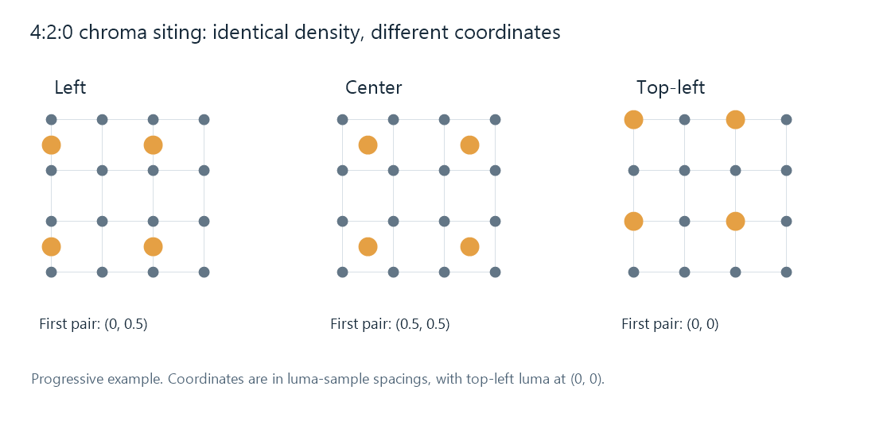

Chroma Sample Location
Two pictures can both be 4:2:0 and still place their chroma samples differently. The subsampling ratio gives the spacing of the smaller color grids. Chroma sample location, or chroma siting, gives their position relative to the luma grid.
The distinction is similar to knowing the spacing between fence posts without knowing where the first post stands. Reconstructing color needs both spacing and starting position.

Gray dots are luma sample positions; orange dots are Cb/Cr pairs. Each example has the same number of samples. Coordinates use one luma spacing as the unit.
Half a sample changes the interpolation
Place the top-left luma sample at coordinate (0, 0). In the progressive examples pictured above, the first chroma pair is at:
| Location | Horizontal coordinate | Vertical coordinate |
|---|---|---|
| Left | 0 | 0.5 |
| Center | 0.5 | 0.5 |
| Top-left | 0 | 0 |
The next pair is two luma spacings away horizontally, and the next chroma row two spacings away vertically. The word “left” describes alignment with a luma column; it does not put every chroma sample at the left edge of the image.
Suppose a horizontal chroma signal has values 0 at x = 0 and 0.4 at x = 2, with no change vertically. Linear interpolation at luma position x = 1 gives 0.2: that position is halfway between the samples.
Now interpret those same stored values as centered samples at x = 0.5 and x = 2.5. Position x = 1 is only one quarter of the way between them, so the interpolated result is 0.1. The array values and dimensions are unchanged; its assumed coordinates have changed the color reconstructed at a picture position.
This simple interpolation is an illustration. More elaborate reconstruction filters still need the correct phase of the sample grid.
Why a color edge can move
Luma and chroma contribute together to reconstructed RGB. A siting mismatch moves the color transition relative to the luma transition. A colored outline beside a fine contrasting edge, or a small horizontal color displacement after conversion, can be the visible result.
Uniform patches provide little evidence: moving a constant chroma field leaves its values the same. A test image with fine colored edges is more informative because it exposes the alignment between color structure and luma structure.
This differs from subsampling loss. A lower-density grid cannot preserve all fine color detail, even when correctly located. Siting establishes where its surviving information belongs.
An Emby conversion may pass through decoded surfaces and filters before encoding a new stream. If a color edge shifts only on that route, comparing the source, processing, and output chroma interpretations helps locate the change. Color signaling puts the sample-location field beside the other frame properties used in that comparison.
Signaling and resampling have different jobs
A codec can describe chroma location in its bitstream, and a decoder can carry that interpretation with its output frame. H.264 includes sample-location signaling with top-field and bottom-field distinctions. Interlaced material needs the appropriate field interpretation; the progressive coordinate table above is not a substitute for that geometry.
Changing a location label tells the next stage where to interpret existing samples. Converting an image from one location to another requires resampling the chroma at new coordinates. That operation creates different sample values around edges while preserving the intended alignment of the picture.